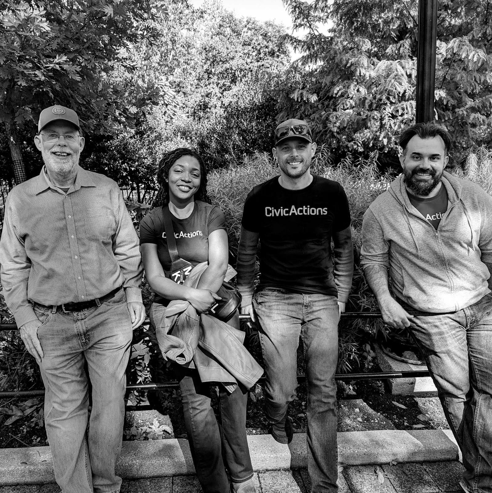

Tech companies have a reputation across the board for high turnover and burnout. At CivicActions, we are working hard to reverse this trend through a culture that cultivates positive work-life balance for mission-driven technologists looking to make a positive impact through their career. Currently we have a retention rate of 87%, and 11% of our team members have been with the company for 5 years or more. Moreover, our turnover rate is only 13%, which is significantly below the industry average of 21.3%.
Kimberlin Schone, Director of People, attributes this low rate of turnover to our culture of care.
“Care is about trusting that your team will tell you what they need to thrive. We each have our own gifts. I call them superpowers. When we create the right environment, where people feel like they can be their authentic selves, that’s when everyone can thrive, and their superpowers come out.”

For Elizabeth Raley, Chief Operating Officer, the reason for high employee retention is ultimately about staying true to our values.
“I think a key part of our retention success story is balance, openness, and care — which happen to be our three defining values as a company,” said Elizabeth, who has spent the last 12 years at CivicActions. “I find that our team — myself included — does our best work when we know and are honoring our priorities at work and beyond, which is how we define balance. We nurture the human side of company culture at CivicActions. We honor ourselves through balance, we care for each other and the people we serve, and we provide an open environment for everyone to thrive and be our authentic selves.”
Since our inception in 2004 as a fully distributed team, CivicActioners have been able to align work and life through our early adoption of remote work culture. Since then, the company has been actively working to set a high standard of company culture.
For Iris Ibekwe, Associate Director of Front End Development, who has been at the company for 8 years, it has been due to her “incredible co-workers, the supportive culture, and the collaborative atmosphere.”
“The team is made up of individuals with excellent skills and expertise who bring unique perspectives and ideas to the table. It makes for a dynamic and stimulating work environment where I constantly learn and grow from my colleagues. Also, the management team is approachable, supportive, and open to critical feedback. They encourage radical transparency where people can be authentic without fear of reprisals. Overall, the culture promotes teamwork and a sense of community. Showing up to work every day is a pleasant experience.”
In addition, opportunities for professional growth and development has been a motivating factor for retention, as well as general employee involvement. Everyone at CivicActions has opportunities to provide feedback and make sure their voices are heard. With regular opportunities for sharing ideas, CivicActioners are encouraged to collaborate and build strong rapport across departments.
The positive impact of these collaborations is all over our #appreciations Slack channel, where positive feedback for colleagues is celebrated and encouraged. Employee resource groups also allow for ample opportunities for exchanging ideas and aligning with team members with similar backgrounds, interests, and goals.
For many, staying at CivicActions can be attributed to the high level of respect the company has for its employees.
“I joined CivicActions at the beginning nearly two decades ago and now help address next-level challenges as Chief Information Security Officer (CISO),” said Fen Labalme, who has been with CivicActions since 2005. “Along the way, I’ve touched nearly every part of the company and have always found a culture and practice of openness, honesty and care that many companies talk about but few live up to. CivicActions is my home.”
David Numan, who has worked at CivicActions as a DevOps Engineer since 2011, said he stayed with the company because of the culture, also adding that the “brilliant people that I get to work with are creative, interesting, and fun. All these things add up to a very positive work experience which has made such a difference when the work has been extra challenging. I count myself very lucky to be a part of this group.”
Looking to join our vibrant, mission-driven community of changemakers? Learn more here and consider joining our team.